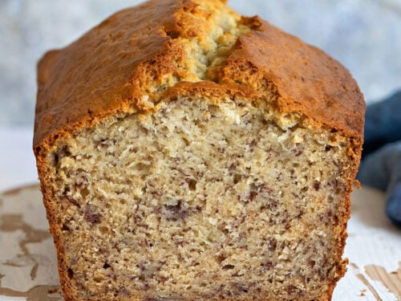

Banana Bread

Description
A cake made with overripe bananas. Easy to make, and tasty to eat for a snack anytime of day!
Ingredients
- 2 cups all purpose flour
- 1 tsp baking powder
- 1/4 tsp salt
- 3/4 cup brown sugar
- 1/2 cup butter
- 2 large eggs
- 2 1/2 cups mashed overripe banana
Directions
- Combine flour, baking powder, salt into a large mixing bowl.
- Beat in brown sugar and butter, mix until smooth.
- Stir in beaten eggs and mashed banana until just combined.
- Pour batter into greased 9x5 loaf pan.
- Bake at 350 deg F for about 60 min.
Back to Recipes Homepage